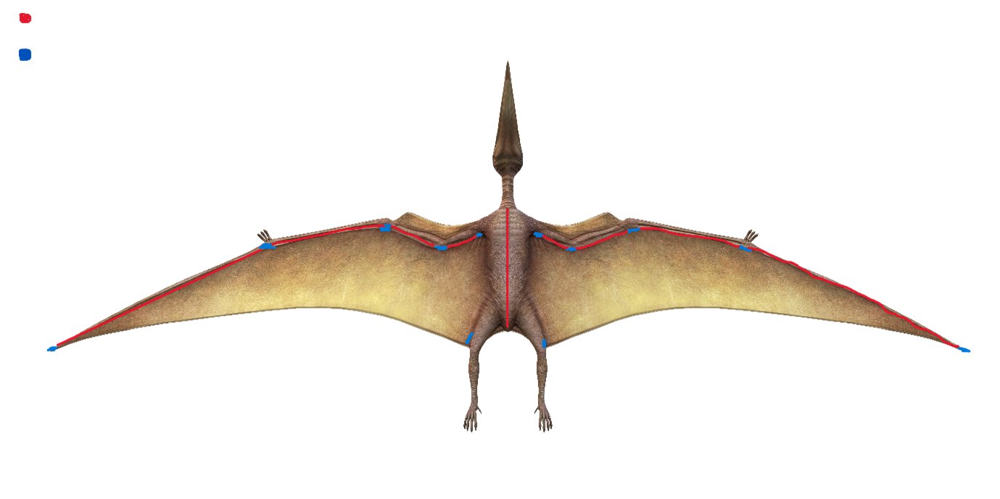

2. Design Development
Mechanical design, material selection, skin system, and costs

Structural and Mechanical Design
With the concept established, design development focused on translating the decisions of Stage 1 into a workable mechanical structure. The first decision concerned the wing joint configuration. A three-joint articulated wing structure was initially proposed, as this would more closely replicate the biomechanics of a pterodactyl wing. However, this was abandoned following a risk assessment: the added complexity of a three-joint system introduced multiple potential points of mechanical failure, required significantly more precise tolerancing across printed components, and would have substantially increased build time; all of which were not feasible within the project's constraints.
A simplified single-joint wing mechanism was adopted instead. This represents a pragmatic compromise between realism and deliverability, and remains appropriate for the primary school use case, where the visual impression of wing movement is the priority rather than biomechanical accuracy.

Fabrication Method: 3D Printing
3D printing was selected as the primary fabrication method for the skeletal framework. This decision was informed by both budget and practical considerations. Of the fabrication technologies explored in the module, 3D printing offered the best balance of design freedom, cost, and accessibility for this prototype.
3D printing allows exact geometries to be reproduced from CAD models, tolerances to be specified and adjusted between iterations, and complex internal structures to be included where needed.
Techniques Considered but Not Used
Several other fabrication technologies covered in the module were evaluated and excluded from this stage of the process:
3D Scanning — 3D scanning hardware and software were available through workshop facilities. This technique would have been useful if an existing physical model of appropriate scale and form were available to digitise, providing an accurate starting point for the CAD work. No suitable reference model existed for this use case, so 3D scanning offered no practical benefit at this stage. In an industrial context, for example, digitising an existing animatronic component for reverse engineering, would be highly valuable.
Motion Capture — Motion capture was considered as a means of referencing realistic wing movement for the actuation design. The most mechanically relevant comparisons available were bat wings; however, the kinematic data this would have produced did not translate meaningfully into the constraints of a 3D-printed compliant mechanism. Motion capture is powerful for character animation pipelines in robotics, but at this prototype scale and with a simplified joint structure, it added complexity without a proportional benefit.
Haptic Sculpting — Haptic input devices paired with 3D sculpting software were available in the module's facilities. This approach was considered for generating organic surface geometry (for the body of the pterodactyl). It was not pursued because the prototype prioritised a compliant mechanism design, in which geometric precision is more important than organic surface form. Haptic sculpting excels at creating naturalistic, freeform shapes but is less suited to producing the kind of geometry required for a functional mechanical assembly.
Resin Casting — Resin production and post-production facilities were available in the module workshops. Resin was considered and rejected for use on this prototype for several reasons: it is brittle and would impede or damage the wing motion at joint locations; it does not replicate the properties of organic skin convincingly; and it is more expensive per unit volume than the alternatives selected. In a different application (for example, producing rigid panels or transparent components) it would be a strong choice.
Laser Cutting — Laser cutting was considered as a means of producing a display stand or base for the prototype. This remained a stretch goal from the concept stage and was not met due to time constraints. Laser cutting would be well-suited to producing a flat-pack stand from sheet material. It remains a viable method for future iterations of the the display solution.
Material Selection
For 3D printed components, PETG (Polyethylene Terephthalate Glycol) was identified as the most appropriate filament material at this stage. PLA was considered as the baseline option due to its ease of printing, but was assessed as insufficiently durable for the final artefact repeated mechanical stress. ABS was also evaluated as it offers better temperature and impact resistance than PLA but its tendency to warp during printing and the need for an enclosure to manage print conditions made it less practical for the available hardware.
PETG was selected as the best compromise: it prints reliably without the warping issues of ABS, offers significantly better impact resistance and layer adhesion than PLA, and has good chemical and UV resistance. This was a relevant consideration for a display piece that may be exposed to ambient light over extended periods. Its relative toughness rather than brittleness is also appropriate for a school environment, where the prototype may experience incidental impact forces even within a display case.
Skin System Design
The skin system was designed with two distinct zones requiring different treatments: the body surface and the wing membrane.

Body skin — The body of the pterodactyl would be covered with silicone, applied layer by layer to build up a skin of consistent depth. In areas where direct silicone application would be impractical such as regions with curves or sharp geometries, a foam or similar substrate was proposed to provide a rounded base before the silicone layer is applied. This is a technique used in professional animatronic and prosthetic fabrication to achieve smooth, consistent surface coverage without excessive silicone volume.
Access to internal mechanisms was a key design consideration. Silicone seams were planned at natural anatomical positions (such as the midsection) to allow the skin to be opened for maintenance without destroying it. Magnetic panel closures were proposed at access points, allowing panels to be held closed by concealed magnets and removed without tools. Slight overlap of skin at these points in their natural resting position would conceal the join.
Wing membrane — The wing membrane presents a different structural challenge: it must be flexible, visually and capable of withstanding the repeated stress of repeated flapping. Silicone alone is insufficient for this as it does not handle tensile stress well and would be prone to tearing at stress concentrations near the joint and frame attachment points.
The approach decided was a fabric membrane with a thin silicone overcoat. The fabric handles the load and the stress of repeated flexing, while the silicone provides the visual finish and surface texture. The fabric would be wrapped around the bone frame edges one to two times and glued at defined points only because applying adhesive across the full span would make the membrane inaccessible for repair and would restrict the natural folding behaviour.
Colour Scheme
The colour palette was planned around muted, natural tones like grey, brown, and dull green. This is consistent with the kind of speculative colouration applied to pterodactyl reconstructions in typical illustrations. Tinting the silicone at the mix stage would provide a consistent base skin tone. Surface painted detail such as darker tones at stress points or joint areas, (which in living animals often correlate to thicker skin or scale concentration) could be applied on top if the base layer achieved a sufficient quality.
Costs
[Add your cost engineering content here — what professional alternatives were considered and why they were not cost-effective for this prototype. What compromises were made?] Th
References
- ADD YOUR REFERENCES HERE in Harvard format. Ali, S. (2026) Pterodactyl isolated on a transparent background 24063834 PNG. Vecteezy. Available at: https://www.vecteezy.com/png/24063834-pterodactyl-isolated-on-a-transparent-background (Accessed: 14 May 2026).
- Monroe, M., Clapp, N., Jandaur, I. and Ogden, J. (2022) Barker Bird Animatronic Senior Project Report. California Polytechnic State University, San Luis Obispo. Available at: https://digitalcommons.calpoly.edu/mesp/646 (Accessed: 14 May 2026).